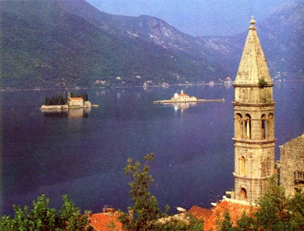

From one picture...

Hotel Adriano
I got to know Mr. Kamui from a certain chance
when I was designing the scenery of the Yakushima Island for FS98.
He has a wonderful sense.
His works placed on the "snap shots change_border_color" of this homepage tell it.
In addition, he is sent a lot of interesting works to me.
At a certain time, He asked me about
the hidden surface processing on designing the scenery.
At that time, the image affixed to his mail is this picture.
The Hotel Adriano was drawn in there.
It is a fictitious hotel floating on the Adriatic Sea
which appears in movie "The Porco Rosso".
My eyes have been glued upon this picture.
In FS at that time, the texture used to draw about scenery
had the limitation of 256 colors.
In addition, because FS had used an original palette,
texture was drawn by 128 colors.
Each building drawn by FS was only what stuck
the same texture on the stereotype.
However, since only such a building was drawn on FS,
I thought that the building which FS draws was such a thing.

I had received this picture at such timing.
And, I received the data files of the "Hotel Adriano" from Mr. Kamui.
I constructed the data to FS at once.
The "Hotel Adriano" as this picture was drawn there.
I gave a sigh when I saw the marvelous scenery.
In those days, I was poor at how to draw the texture.
I learnt the method of designing the texture from him in detail.
The picture of the "Hotel Adriano" became an opportunity
changing my scenery design a lot.
I am still poor at the texture design of a building.
However, I have improved my skill of drawing islands
(including mountains and coastlines).
The pictures of the LeeWard islands, the Rangiroa atoll etc.
which are located on the pages of "Screen Shots" are the works of design
based on the method which I learned from Mr.Kamui.

By the way...
I wrote that the "Hotel Adriano" was a fictitious hotel
floating on the Adriatic Sea.
Certainly, the "Hotel Adriano" is a fictitious hotel.
However, Mr. Kamui sent me a photograph.
In the lakes zone located on the eastern part of the Adriatic Sea,
there are the hotels that float really on the lake.